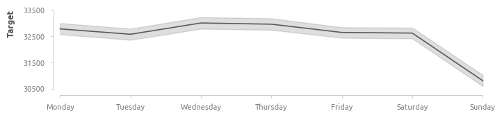
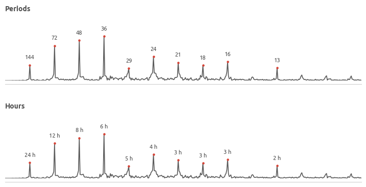
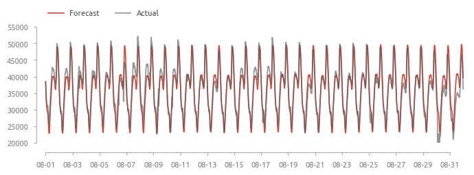

Датасет содержит данные о потреблении электроэнергии в городе Тетуан, Марокко. Город снабжается тремя электростанциями Quads, Smir и Boussafou, на каждой их которых установлена автоматизированная система, осуществляющая сбор данных об энергопотреблении каждые 10 минут. Дополнительно доступна информация о температуре и влажности воздуха, скорости ветра и низкотемпературных флюидах.
Страница датасета на сайте Kaggle
target1 - уровень потребления электроэнегии (электростанция Quads);
target2 - уровень потребления электроэнегии (электростанция Smir);
target3 - уровень потребления электроэнегии (электростанция Boussafou).
Первый этап
Задача первого этапа - построить авторегрессионную модель, которая учитывает множественные сезонные факторы и дополнительно сгенерированные предикторы, для прогнозирования потребления энергии, вырабатываемой электростанцией Quads (целевая переменная - target1). Модель обучается на данных текущего месяца и прогнозирует спрос на электроэнергию в следующем месяце.
Обучение и оценка: Февраль-Июль;
Валидация и анализ: Август;
Итоговое тестирование: Сентябрь.
В качестве предикторов используется дополнительно сгенерированная переменная - величина спроса на электроэнергию за предыдущий месяц в аналогичный момент времени, а также результаты разложения Фурье.
Последующие этапы
опробовать различные стратегии бустинга (прогнозирования остатков) для повышения точности модели;
исключить аномалии из обучающих данных и оценить эффект;
дополнить предикторы с помощью библиотеки feasts языка R;
обучить ML-модель и ANN для сравнения с классической авторегрессией;
прогнозировать тренд/сезонность/остатки отдельно - построить ансамбль авторегрессий.
Исследование данных
Среднесуточное потребление
Тренд меняется дважды - в начале мая и в середине июня. По всей видимости, в первом случае изменение вызвано естественными причинами, тогда как во втором это аномальное снижение в двадцатых числах июня и последующее восстановление до естественного уровня с более высокими темпами.
Полные данные за апрель, май и июнь
Визуализация полных данных раскрывает наличие суточной сезонности, провалов в воскресные дни. Аномальное снижение потребления, обнаруженное в предыдущем пункте, произошло в понедельник, 26 июня.
Данные, усредненные по дням недели
Значимость выходного дня (воскресенье) подтверждается - в выходные дни потребление в среднем ниже на 2000 единиц.

Данные, усредненные по числам месяца
В первой трети месяца потребление заметно ниже, провал 14-го числа может быть связан с региональными особенностями.
Суточные данные
Аномалии в данных
Аномалии можно условно разделить на два типа: точечные и групповые. В рамках данной работы точечными аномалиями считаются резкие скачки уровня потребления (нагрузки электростанции), а групповыми - изменение структуры временного ряда и отклонение от общей тенденции. В целом, поиск обоих типов аномалий ограничивается визуальной оценкой данных.
Большинство аномалий характеризуются резким сниженим уровня потребления электроэнергии и достаточно быстрым восстановлением. Таковыми являются аномалии 28 марта, 29-31 мая, 5-7 июня. Отдельно стоит отметить аномалии 26 июня и 20 апреля.
С точки зрения контекста, аномалии можно разделить также на два типа: внутрениие и внешние. Внутренними считаются аномалии, возникшие в следствие несовершенства системы электроснабжения. Сюда входят, например, сбои в работе оборудования, которые приводят к перебоям с поставкой электроэнергии потребителям. Внешние - это снижение и увеличение потребления в результате воздействия фаткоров, не связанных с системой электроснабжения (например, аномалия 26 июня). В рамках данной работы не предусматривается сбор дополнительных данных, а имеющихся данных недостаточно для включения внутренних и внешних эффектов в модель, соответственно, задача прогнозирования аномалий не стоит.
Групповые аномалии
Аномалия 26 июня
На рафиках видно, что потребление снизилось одновременно во всех трёх районах города и плавно восстанавливалось в течение последующей недели. Вероятная причина - акции протеста 26 июня 2017 года (ссылка на статью в The Nation).
Точечные аномалии
Аномалии, определенные здесь как точечные, выявляются с помощью волатильности. Волатильность рассчитывается как квадрат относительного изменения величины спроса для каждого элемента. Основные аномалии произошли во второй половине апреля, в конце марта и мая, в первых числах июня и июля.
Аномалия 20 апреля
Внешне это выглядит как авария на электростанции Quads, потому что одновременно с резким снижением нагрузки на этой электростанции, выросла нагрузка станции 2 (Smir). По всей видимости, некоторые потребители были переключены на электростанцию Smir.
Выбор базовой модели
В данном разделе проводится несколько поэтапных кросс-валидаций для выбора параметров модели. В первую очередь оцениваются параметры авторегрессии, после этого выбираются период и порядок ряда Фурье для включения в модель сезонных факторов. Далее базовая модель оценивается на валидационных данных для получения первых оценок эффективности и ошибок.
Метрики эффективности
В проекте используются общепринятые метрики.
R-squared - простой и эффективный способ измерить, насколько прогноз соответствует истинным значениям.
MAE (Mean Absolute Error) - метрика, относительно устойчивая к выбросам.
MAPE (Mean Absolute Percentage Error) - простая в интерпретации метрика, оценивающая процентное соответствие прогноза и истинных значений.
RMSE (Root Mean Squared Error) - простой и эффективный способ измерить, насколько прогноз соответствует истинным значениям.
Наивные модели
В качестве бенчмарка эффективности используются две наивные модели.
Первая - это значение целевой переменной в предыдущий период вермени (10 минут назад). На практике подобная модель бесполезна, так как горизонт планирования составляет одно единственное измерение. Тем не менее, её прогнозы полезны для сравнения с другими моделями, и их условно можно назвать идеалом точности для данного врменного ряда.
Характеристики первой наивной модели
\(R^{2}:\) 0.992
\(MAE:\) 468;
\(MAPE:\) 1.33;
\(RMSE:\) 697
Вторая - это уровень потребления в предыдущем месяце в текущий момент времени. Например, для 10:00:00 1 августа это будет значение потребления в 10:00:00 1 июля Если в предыдущем месяце отсутствует аналогичная дата, например, в предыдущем месяце 30 дней, а в текущем - 31 день, то данные за 31 число заполняются данными за 30. Модель оценивается на данных за август.
Характеристики второй наивной модели
\(R^{2}:\) 0.746
\(MAE:\) 2763;
\(MAPE:\) 7.68;
\(RMSE:\) 3558
Вторая наивная модель объясняет примерно 75% изменчивости данных за август. Во многом величина ошибок объясняется довольно сильным различием июльских и августовских данных.
Стационарность и автокорреляция
Временной ряд стационарен как для полных обучающих данных (Февраль-Июль), так и для ежемесячных данных на уровне значимости \( \alpha \) = 0.05. Стационарность проверяется через Dickey-Fuller test.
График автокорреляции дает первое представление о наличии сезонности - пики для лагов 144, 72 (эквивалентны суточной и 12-часовой сезонности).
Последний значимый коэффициент на графике PACF для дифференциорованных данных равен 5, соответственно на первой кросс-валидации исследуются все комбинации AR и MA в пределах от 1 до 6 для двух вариантов параметра i - 0 и 1.
Схема кросс-валидации
Для этого и последующих этапов перекрестной проверке используется следующая схема (до стадий Valid и Test).
Данные с Февраля по Июль разбиваются на равные обучающие и валидационные блоки, образуя последовательность из 5 фолдов. Временная задержка между блоками, а также включение в модель предикторов пока не предусматривается. Метрика эффективности - RMSE.
Параметры авторегрессии
В лидерах преимущественно модели с AR и MA выше 4. Лучшая из относительно простых моделей - ARIMA (2, 1, 1) показала второй результат. В среднем ошибки моделей с интеграцией ниже более чем в 2-2.5 раза по сравнению с моделями без интеграции.
Для экономии ресурсов при оценки модели используется сочетание ручного и автоматического подбора гиперпарметров. В первую очередь подбираются параметры авторегрессии AR и MA (порядок интеграции i принимается равным 1). Это делается на основе графиков ACF и PACF. Далее выбранная вручную модель сравнивается с моделью, подобранной с помощью библиотеки pmdarima, и выбирается наиболее производительная. После этого выполняется преобразование Фурье для оценки сезонных факторов, период ряда Фурье оценивается с помощью 5-fold кросс-валидации со скользящим окном (задержка не предусматривается).
Параметры авторегрессии выбираются вручную в интервале от 1 до 5. Лучшая модель сравнивается с моделью, подобраной с помощью библиотеки pmdarima. Критерий сравнения - значение AIC и Likelihood-ratio test.
Ручной выбор: ARIMA(4, 1, 2);
Выбор pmdarima: ARIMA(1, 1, 2).
ARIMA(4, 1, 2) превосходит ARIMA(1, 1, 2) по AIC (67470 vs 67580) и LLR test (p-value = 0.000) и будет исследоваться в дальнейшем.
Производительность ARIMA(4, 1, 2) без учета сезонных факторов:
MAE: ~5917;
MAPE: ~16.5;
MRSE: ~7075.
Преобразование Фурье
Преобразование Фурье применяется для разложения исходного ряда на компоненты, которые в данном случае характеризуют сезонность в данных. После нескольких тестов выбраны коэффициенты, равные 144, 72, 48 и 36. Они эквивалентны суточной, 12-часовой, 8-часовой и 6-часовой сезонности.

Результаты кросс-валидации
Периоды ряда Фурье оцениваются с помощью 5-fold кросс-валидации со скольящим окном без введения задержки по времени между train и valid данными.
RMSE лучшей модели: ХХХХХХХ
Архитектура лучшей модели: ХХХХХХХХХ
Ошибки за март и апрель практически не отличаются, смена тренда в Мае привела к росту ошибки прмерно на ХХХХХ% от ХХХХХ до ХХХХХ. Данные за Июль и Июнь также заметно отличаются (аномалия второй половины июня и изменение наклона тренда), что привело к дальнейшему росту ошибки.
Модель, обученная на данных за последний месяц, чувствительна к изменению тренда и не способна улавливать долгосрочные тенденции.
Анализ прогнозов и ошибок
Для валидации модели используются данные за Август.
Модель не среагировала на провалы в потреблении 6 и 30 августа.
В первые три недели заметно недооценивалось потребление в полдень вторника, среды и четверга;
Несмотря на наличие предиктора "is_Sunday", модель переоценивает потребление в воскресенье - 6, 13, 20, 27 августа.

Остатки модели
Сравнение распределения остатков с нормальным распределением
Сильнее всего модель ошиблась 30 и 31 августа, график среднесуточных ошибок подтверждает переоценку потребления в воскресенье.
Возможно наличие паттернов в ошибках для четных и нечетных недель. Прогнозы для 2 и 4 недели заметно точнее (если не учитывать заметные ошибки 7 и 8 августа, которые могут быть каким-то образом связаны аномалией 6 числа).
Недельные графики
На недельных графиках заметна явная недооценка энергопотребления примерно в 20 часов, при этом паттерн усиливается во второй половине месяца.


 Данные с Февраля по Июль разбиваются на равные обучающие и валидационные блоки, образуя последовательность из 5 фолдов. Временная задержка между блоками, а также включение в модель предикторов пока не предусматривается. Метрика эффективности - RMSE.
Данные с Февраля по Июль разбиваются на равные обучающие и валидационные блоки, образуя последовательность из 5 фолдов. Временная задержка между блоками, а также включение в модель предикторов пока не предусматривается. Метрика эффективности - RMSE.
 Для экономии ресурсов при оценки модели используется сочетание ручного и автоматического подбора гиперпарметров. В первую очередь подбираются параметры авторегрессии AR и MA (порядок интеграции i принимается равным 1). Это делается на основе графиков ACF и PACF. Далее выбранная вручную модель сравнивается с моделью, подобранной с помощью библиотеки pmdarima, и выбирается наиболее производительная. После этого выполняется преобразование Фурье для оценки сезонных факторов, период ряда Фурье оценивается с помощью 5-fold кросс-валидации со скользящим окном (задержка не предусматривается).
Параметры авторегрессии выбираются вручную в интервале от 1 до 5. Лучшая модель сравнивается с моделью, подобраной с помощью библиотеки
Для экономии ресурсов при оценки модели используется сочетание ручного и автоматического подбора гиперпарметров. В первую очередь подбираются параметры авторегрессии AR и MA (порядок интеграции i принимается равным 1). Это делается на основе графиков ACF и PACF. Далее выбранная вручную модель сравнивается с моделью, подобранной с помощью библиотеки pmdarima, и выбирается наиболее производительная. После этого выполняется преобразование Фурье для оценки сезонных факторов, период ряда Фурье оценивается с помощью 5-fold кросс-валидации со скользящим окном (задержка не предусматривается).
Параметры авторегрессии выбираются вручную в интервале от 1 до 5. Лучшая модель сравнивается с моделью, подобраной с помощью библиотеки 

 Сильнее всего модель ошиблась 30 и 31 августа, график среднесуточных ошибок подтверждает переоценку потребления в воскресенье.
Сильнее всего модель ошиблась 30 и 31 августа, график среднесуточных ошибок подтверждает переоценку потребления в воскресенье.